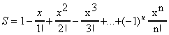
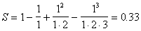
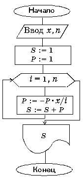

Задание 5
Выполните задание, организовав ввод данных с помощью однострочного редактора с маской ввода, вывод промежуточных результатов с помощью компонента Memo, а итоговый результат – с помощью компонента Edit (в результате – не более 3 цифр в дробной части числа). Предусмотрите обработку исключительных ситуаций!
1. Используя оператор цикла с параметром, вычислить значения выражений при заданном n.
|
1. |
(n сомножителей) |
|
2. |
(n слагаемых) |
|
3. |
sin x+sin2 x+…+sinn x (n слагаемых) |
|
4. |
sin x+sin x2+…+sin xn (n слагаемых) |
|
5. |
(n слагаемых) |
|
6. |
(1-1×2) × (1-1×2+1×2×3) × (1-1×2+1×2×3-1×2×3×4) ¼ ( n сомножителей) |
|
7. |
(n слагаемых) |
|
8. |
(n слагаемых) |
|
9. |
(n! - 1) × ((n - 1)! + 2) × ((n - 3)! – 4) × ((n - 4)! + 8) …(n сомножителей) |
|
10. |
(n слагаемых) |
|
11. |
sin x+sin2 x2+…+sinn x n (n слагаемых) |
|
12. |
(n сомножителей) |
|
13 |
1× (1-2) × (1-2+4) × (1-2+4 -7) × (1-2+4 –7+11)¼ ( n сомножителей) |
|
14 |
(n слагаемых) |
|
15 |
(n слагаемых) |
2. Разработать программу для решения следующей задачи:
Для заданного x вычислить

Здесь n! = 1. 2. 3 .... n (читается как "n-факториал").
Тест
|
Данные |
Результат |
|
|
X=1 |
n=3 |
 |
Блок-схема
